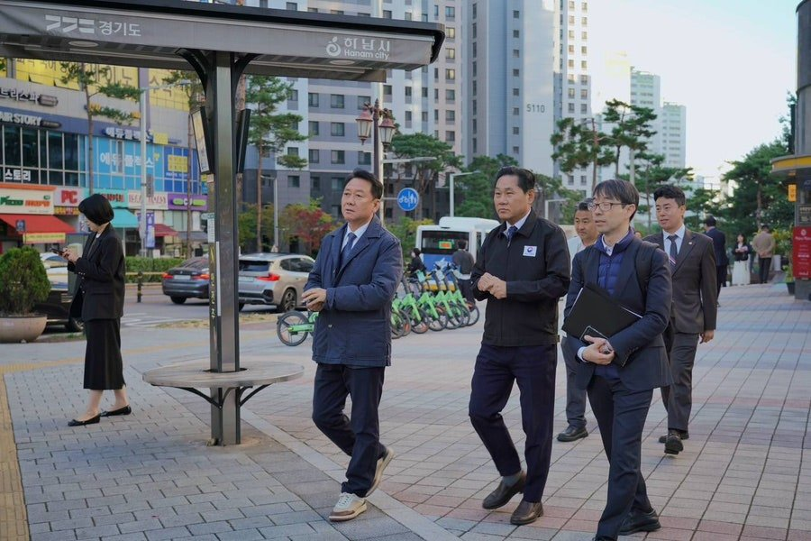
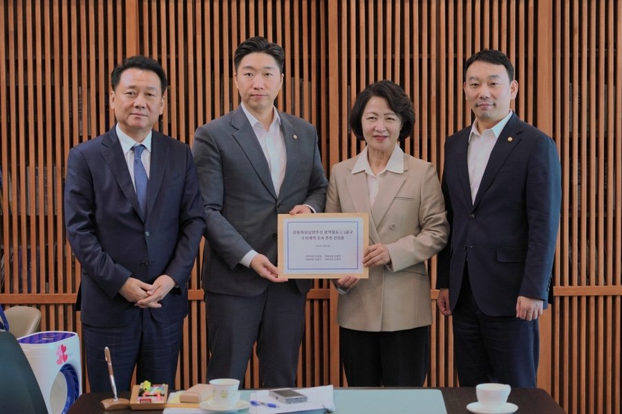
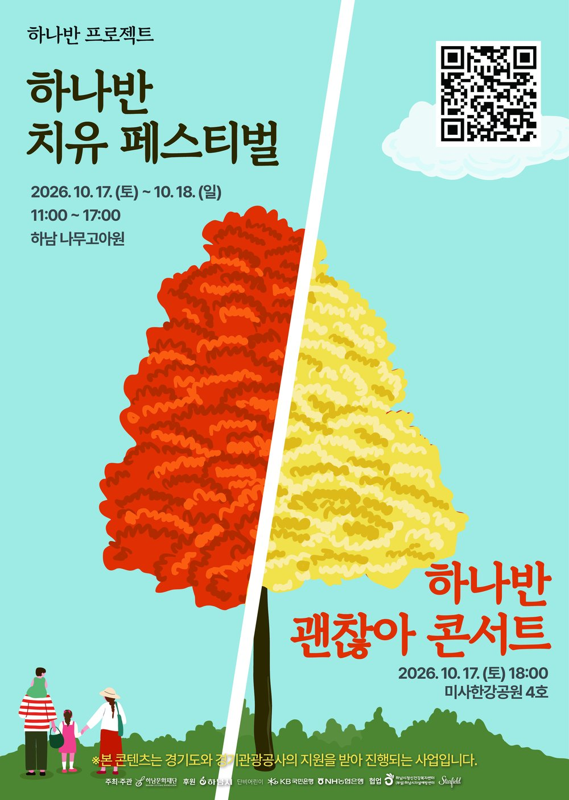

58호 | 2026년 10월 15일 발행
📌 이번 호 주요 목차
 우리동네 국회의원 이광재
우리동네 국회의원 이광재
📝 현장일지
이광재의원 "버스는 오늘도 위례를 스쳐 지나갑니다" 김용석 대광위원장과 출근길 정류장 점검
• 김용석 국토부 대도시권광역교통위원장과 가장 붐비는 출근 시간대 위례 버스정류장 점검
• 서울 버스는 위례 정류장을 그냥 지나가고, 경기 버스는 총량 규제로 서울 진입 제한
• 경기→서울 출근·통학 125만 명, 그러나 버스 노선은 시·도 경계에서 멈춰
• 대광위를 '대광청'으로 격상해 경계 넘는 노선 직접 인가, 광역교통 특별회계 신설 제안
• "철도는 길게, 버스는 즉시. 위례 정류장의 버스부터 풀겠습니다"
• 서울 버스는 위례 정류장을 그냥 지나가고, 경기 버스는 총량 규제로 서울 진입 제한
• 경기→서울 출근·통학 125만 명, 그러나 버스 노선은 시·도 경계에서 멈춰
• 대광위를 '대광청'으로 격상해 경계 넘는 노선 직접 인가, 광역교통 특별회계 신설 제안
• "철도는 길게, 버스는 즉시. 위례 정류장의 버스부터 풀겠습니다"

📌 출처: 이광재 공식 네이버 블로그
📝 현장일지
이광재의원 "지하철 9호선 연장, 속도를 내야 합니다" 추미애 경기도지사에 건의문 전달
• 김용민·김용만 의원과 함께 추미애 경기도지사에게 9호선 연장 조속 추진 건의문 전달
• 하남시민이 오랫동안 기다려 온 9호선 연장 사업이 속도를 내지 못하는 상황
• 사업이 더 늦어지지 않도록 경기도의 적극적인 협조와 신속한 결정 요청
• 출퇴근 하루 한 시간은 아이 등원·부모님 돌봄의 시간, 그 시간을 시민에게 돌려드려야
• "출퇴근길은 짧게, 가족과 함께하는 시간은 길게"
• 하남시민이 오랫동안 기다려 온 9호선 연장 사업이 속도를 내지 못하는 상황
• 사업이 더 늦어지지 않도록 경기도의 적극적인 협조와 신속한 결정 요청
• 출퇴근 하루 한 시간은 아이 등원·부모님 돌봄의 시간, 그 시간을 시민에게 돌려드려야
• "출퇴근길은 짧게, 가족과 함께하는 시간은 길게"

📌 출처: 이광재 공식 네이버 블로그
📰 언론보도
[국제뉴스] 이광재의원 "버스는 즉시 해결" 김용석 대광위원장과 위례 버스정류장 현장 점검
이광재 의원은 김용석 국토교통부 대도시권광역교통위원장을 초청해 출근 시간대 위례 신도시 버스정류장을 함께 점검했습니다. 위례는 송파구·성남시와 길 하나를 사이에 두고 있지만 서울 버스는 위례 정류장에 서지 않고, 경기도 버스는 총량 규제로 서울 진입이 막혀 있습니다. 이 의원은 대광위를 '대광청'으로 격상해 시·도 경계를 넘는 버스 노선을 직접 인가하고, 광역교통 특별회계로 버스·철도에 즉시 재정을 투입해야 한다고 강조했습니다.
📌 출처: 국제뉴스 (이지영 기자)
📰 하남 지역 주요 뉴스
🏗️ 신도시/개발
강성삼 경기도의원, 교산신도시 대토보상 지연 간담회 주재… "LH·GH 사전 협의로 일정 단축해야"
경기도의회 강성삼 의원(하남2)이 지난 13일 교산신도시 대토보상 관계기관 간담회를 열었습니다. 이광재 국회의원 보좌관과 LH·GH 실무진, 토지주들이 참석한 자리에서 원주민들은 약 6년을 기다렸는데도 필지 지정과 공급계약이 계속 늦어진다며 일정을 조속히 확정해 달라고 요구했습니다. GH는 내부 절차를 서둘러 2027년 1분기 안에 용지 공급을 앞당기는 방안을 검토하겠다고 밝혔습니다. 강 의원은 "주민에게 기다림을 요구하기보다 LH와 GH가 사전에 협의해 전체 일정을 최대한 단축해야 한다"고 강조했습니다.
📌 출처: 서울신문 (서울Pn)
🏛️ 시정/의회
최승태 하남시의원, 행정사무감사서 하남도시공사 사장 재임명 과정 집중 추궁… "명문화된 심사 기준 없어"
하남시의회 최승태 의원이 14일 행정사무감사에서 최철규 하남도시공사 사장의 재임명 과정을 따져 물었습니다. 최 사장은 최근 3년 경영평가에서 '다' 등급 2회, '마' 등급 1회를 받아 연임 요건을 채우지 못했지만 공개모집을 거쳐 다시 선임됐습니다. 최 의원은 그 배경과 경영실적 반영 여부를 물었고, 두 차례 공모에서 '적격자 없음' 결정을 내린 임원추천위원회에 명문화된 점수 기준이 없었다는 점도 드러났습니다. 시와 공사는 심사 기준을 구체화하는 방안을 검토하기로 했습니다.
📌 출처: 디스커버리뉴스
👶 인구/보육
서울 떠난 영유아 1만 명 하남으로… 하남시, 10년간 영유아 순유입 '전국 1위'
하남시가 최근 10년간 전국 229개 시군구 가운데 영유아 순유입 비율이 가장 높은 도시로 분석됐습니다. 국토연구원 학술지 '국토연구'에 실린 논문에 따르면 2016~2025년 하남시의 영유아 순이동지수(NMI)는 13.60으로 전국 1위였고, 같은 기간 서울에서 하남으로 옮겨 온 영유아는 1만 56명으로 기초지자체 중 가장 많았습니다. 미사·감일·위례 신도시 주택 공급과 5호선 개통이 유입을 이끈 것으로 분석됐습니다. 이현재 하남시장은 돌봄 공백이 생기지 않도록 선제적인 대응을 주문했습니다.
📌 출처: 연합뉴스 (이우성 기자)
🚶 문화/체육
11월 7일 '미사 한강 모랫길·위례 강변길 건강 걷기대회'… 사전 신청 없이 현장 무료 참가
'2026 미사 한강 모랫길·위례 강변길 건강 걷기대회'가 11월 7일(토) 열립니다. 하남시체육회가 주최하며 시민 1천여 명이 참여할 예정이고, 사전 신청 없이 현장에서 무료로 참가할 수 있습니다. 1코스(약 6.6㎞)는 오전 9시 하남시청 농구장, 2코스(약 8㎞)는 오전 8시 30분 미사호수공원 광장에서 출발해 유니온파크 잔디광장에 도착합니다. 도착지에서는 오전 11시부터 버스킹 공연과 폐회식이 열리며, 이광재 국회의원 등이 참석해 축하 인사를 전할 예정입니다.
📌 출처: 경기일보
💬 하남 맘카페 HOT 이슈
이번 주 하남 지역 맘카페(미사맘스클럽, 아이품애, 정다운 감일맘, 하남맘 등)에서 많이 오르내린 HOT 이슈 TOP 3입니다.
1️⃣ [건강] "주말 소아과 대기가 너무 길어요"… 독감 예방접종 병원·가격 문의 봇물
현황: 미사맘스클럽에는 일정 때문에 미루다 이제야 6살 아이 독감 예방접종을 하려는데 주말 소아과는 대기가 길고 독감에 걸린 아이들도 많다며 대기가 적은 병원을 묻는 글이 올라왔습니다. 성인 유료 접종을 조금이라도 저렴하게 맞을 곳을 찾는 글, 이틀 연속 독감 검사를 받을 때 비용은 어떻게 되는지, 코로나·독감 동시 검사 비용이 병원마다 다른지 묻는 글도 이어졌습니다. 아이품애 카페에는 중학생 첫째의 무료 접종을 소아과에서도 받을 수 있는지, 평일 야간이나 주말에 가능한 곳을 찾는 글이, 감일맘 카페에는 아이 접종하는 김에 엄마도 함께 맞으려는데 유료 접종 가격이 얼마인지 묻는 글이 올라왔습니다.
💡 주민 포인트: 생후 6개월~13세 어린이는 국가예방접종 무료 대상이니 질병관리청 '예방접종도우미' 누리집·앱에서 가까운 위탁의료기관을 확인하세요. 중3~고3(2008~2011년생)은 11월 21일까지 경기도교육청 지원으로 지정 병원에서 접종할 수 있습니다(아래 공공기관 소식지 참고). 유료 접종 가격은 건강보험심사평가원 '비급여 진료비 정보'에서 병원별로 비교할 수 있습니다.
💬 주민 반응: 주말·저녁에 접종 가능한 병원과 가격 정보를 서로 공유하며, 독감 환자가 더 늘기 전에 서둘러 맞히자는 글이 이어졌습니다.
📌 출처: 네이버 카페 (미사강변도시 미사맘스클럽, 아이품애, 정다운 감일맘)
2️⃣ [나들이] "아이들이랑 갈 만한 가을 축제 없을까요?"… 축제는 많은데 어디 갈지 고민
현황: 하남맘 카페에는 아이들이 직접 체험할 프로그램과 뛰어놀 공간, 먹거리가 있으면서 너무 붐비지 않는 가을 축제를 추천해 달라는 글이 올라왔습니다. 감일 지역 호감맘 카페에도 꽃·먹거리·놀거리 축제가 여기저기 많은데 막상 가기는 쉽지 않다며 다른 집은 어디를 다녀왔는지 묻는 글이 올라왔고, 미사 14단지 입주민 카페에는 단지 마을축제를 연다며 많이 와서 즐거운 추억을 담아 가라는 안내가 공유됐습니다. 미사맘스클럽에서는 아이가 뛰어놀 만한 근교 대형 야외놀이터를 묻는 글에 추천을 받아 광나루 모두의놀이터를 다녀왔다는 후기도 올라왔습니다.
💡 주민 포인트: 이번 주말(10.17~18) 하남 나무고아원에서 숲요가·반려나무 입양·숲놀이 등 가족 체험이 가득한 '하나반 치유 페스티벌'이 열리고, 17일 저녁에는 미사한강공원에서 '괜찮아 콘서트'도 열립니다(아래 ALL IN 하남라이프 참고). 11월 7일에는 사전 신청 없이 참여하는 한강변 건강 걷기대회도 있습니다.
💬 주민 반응: 멀리 가지 않고 동네에서 부담 없이 다녀올 만한 축제와 놀이터 정보를 서로 나누는 글이 이어졌습니다.
📌 출처: 네이버 카페 (하남맘, 호감맘, 미사14단지 입주민협의회, 미사강변도시 미사맘스클럽)
3️⃣ [교육] "중학교 배정은 언제 알 수 있나요?"… 진학 앞둔 학부모들의 학교 정보 찾기
현황: 아이품애 카페에는 덕풍초 6학년 아이를 둔 학부모가 대부분 덕풍중으로 배정된다는데 집이 덕풍시장 쪽이라 남한중을 신청하면 갈 수 있는지, 배정 결과는 언제 알 수 있는지 묻는 글이 올라왔습니다. 미사맘스클럽에는 아이가 관심을 보이는 하남경영고에 대한 정보가 너무 없다며 재학생·졸업생 가족의 이야기를 구하는 글과, 신장고 내신을 봐 주는 학원을 찾는 글이 이어졌습니다. 위례 교육 카페에는 위례에서 중학교를 졸업하고 아는 친구가 적은 감일고로 진학해도 잘 적응할지 걱정하는 글도 올라왔습니다.
💡 주민 포인트: 중학교 배정 방법과 일정은 다니는 초등학교 안내문과 광주하남교육지원청 공지에서 확인하는 것이 가장 정확합니다. 고등학교 정보는 '학교알리미'에서 교육과정·학생 수·진학 현황 등을 볼 수 있고, 학교별 입학설명회에 참석하면 궁금한 점을 직접 물어볼 수 있습니다.
💬 주민 반응: 같은 학교에 아이를 보낸 선배 학부모들의 경험담을 듣고 싶다는 글이 이어졌습니다.
📌 출처: 네이버 카페 (아이품애, 미사강변도시 미사맘스클럽, 위례에서 공부하기)
🎭 ALL IN 하남라이프
2026년 10월 15일 기준 한눈에 보는 하남시 최신 문화·행사·교육 안내 가이드
🍁 10.17(토)~18(일) | 나무고아원 · 미사한강공원 4호
[하나반 프로젝트] '하나반 치유 페스티벌' & '하나반 괜찮아 콘서트' (하남문화재단)
"단풍 든 나무고아원에서 숲요가·숲명상, 저녁엔 어반자카파·민경훈·나린 콘서트"
하남문화재단이 경기도·경기관광공사 지원으로 여는 가을 치유 축제입니다. 일부 프로그램은 사전 접수가 필요하니 포스터 QR코드로 확인하세요.
🗓 페스티벌: 10월 17일(토)~18일(일) 11:00~17:00, 하남 나무고아원
🧘 17일(토): 숲요가(가족요가) 11:00, 숲명상 13:00 (각 사전 접수 40명) / 그림책 『나무고아원』 이정록 작가 치유 토크콘서트 14:30 / 반려나무 입양 11:00~17:00 (사전 20명·현장 100명)
🏃 18일(일): 하나반 마음속도 마라톤(현장 선착순 100명), 숲멍 콘테스트, 숲포츠 대회, 지역예술인 공연, 마음콘서트 '이고도', 치유 상담·체험 부스(퍼스널컬러·타로·향수 만들기 등)
🎤 괜찮아 콘서트: 10월 17일(토) 18:00~19:45, 미사한강공원 4호 — 어반자카파, 민경훈, 나린
☎️ 문의: 하남문화재단 도시관광그룹 031-790-7926
하남문화재단이 경기도·경기관광공사 지원으로 여는 가을 치유 축제입니다. 일부 프로그램은 사전 접수가 필요하니 포스터 QR코드로 확인하세요.
🗓 페스티벌: 10월 17일(토)~18일(일) 11:00~17:00, 하남 나무고아원
🧘 17일(토): 숲요가(가족요가) 11:00, 숲명상 13:00 (각 사전 접수 40명) / 그림책 『나무고아원』 이정록 작가 치유 토크콘서트 14:30 / 반려나무 입양 11:00~17:00 (사전 20명·현장 100명)
🏃 18일(일): 하나반 마음속도 마라톤(현장 선착순 100명), 숲멍 콘테스트, 숲포츠 대회, 지역예술인 공연, 마음콘서트 '이고도', 치유 상담·체험 부스(퍼스널컬러·타로·향수 만들기 등)
🎤 괜찮아 콘서트: 10월 17일(토) 18:00~19:45, 미사한강공원 4호 — 어반자카파, 민경훈, 나린
☎️ 문의: 하남문화재단 도시관광그룹 031-790-7926

📌 출처: 하남문화재단
💬 10.12(월)~10.23(금) | 40명 추첨 · 올리브영 상품권
「고마워요, 우리 동네 육아종합지원센터」 칭찬 댓글 이벤트 (하남시육아종합지원센터)
"시간제보육·장난감도서관·놀이체험실… 고마웠던 선생님께 댓글 한 줄"
한국영유아보육·교육진흥원(중앙육아종합지원센터)이 진행하는 이벤트로, 하남시육아종합지원센터를 이용하며 도움받은 경험을 댓글로 남기면 참여할 수 있습니다.
📝 기간: 10월 12일(월) ~ 10월 23일(금)
✅ 방법: 중앙육아종합지원센터 인스타그램(@central_childcare) 이벤트 게시물에 '이용 센터명 + 직원 칭찬 또는 도움이 된 사업 이용 후기' 댓글 작성
🎁 경품: 무작위 추첨 40명, 올리브영 모바일상품권 2만 원 (1인 1회)
📢 발표: 10월 28일(수) 추첨, 10월 30일(금) 인스타그램 발표 및 DM 개별 안내 (기한 내 DM 회신이 없으면 취소)
⚠️ 유의: 공식 계정은 계좌번호·금전을 요구하지 않습니다. 댓글에 연락처 등 개인정보는 적지 마세요.
한국영유아보육·교육진흥원(중앙육아종합지원센터)이 진행하는 이벤트로, 하남시육아종합지원센터를 이용하며 도움받은 경험을 댓글로 남기면 참여할 수 있습니다.
📝 기간: 10월 12일(월) ~ 10월 23일(금)
✅ 방법: 중앙육아종합지원센터 인스타그램(@central_childcare) 이벤트 게시물에 '이용 센터명 + 직원 칭찬 또는 도움이 된 사업 이용 후기' 댓글 작성
🎁 경품: 무작위 추첨 40명, 올리브영 모바일상품권 2만 원 (1인 1회)
📢 발표: 10월 28일(수) 추첨, 10월 30일(금) 인스타그램 발표 및 DM 개별 안내 (기한 내 DM 회신이 없으면 취소)
⚠️ 유의: 공식 계정은 계좌번호·금전을 요구하지 않습니다. 댓글에 연락처 등 개인정보는 적지 마세요.
📌 출처: 하남시육아종합지원센터
🏛️ 공공기관 소식지
2026년 10월 15일 기준 하남시 공공기관 주요 공고·신청 안내입니다.
💉 경기도교육청 · 하남시보건소 | ~11.21(토) · 1인 3만 원 지원
2026년 경기도교육청 중·고등학생 독감 예방접종 지원 — 11월 21일까지 지정 병원에서 접종
"중3~고3, 독감 백신 접종비 3만 원을 지원합니다"
경기도교육청이 중·고등학생의 독감 예방을 위해 지정 의료기관에서 맞는 인플루엔자 백신 접종비를 지원합니다.
👥 대상: 경기도 소재 학교 중3~고3 재학생 및 경기도 중·고등학생 중 2008.1.1.~2011.12.31. 출생자
💉 지원: 인플루엔자 3가 백신 접종비 1인당 30,000원 (의료기관에 직접 지급)
🗓 기간: 2026년 10월 5일(월) ~ 11월 21일(토) 접종분만 지원
✅ 방법: 보호자 동반 또는 보호자 동의서를 지참하고 학생이 지정 의료기관을 개별 방문
🏥 참여 병원: 보건소 공지 첨부 명단 확인 — 방문 전 병원에 접종 가능 여부를 꼭 전화로 문의하세요
☎️ 문의: 광주하남교육지원청 031-280-7155
경기도교육청이 중·고등학생의 독감 예방을 위해 지정 의료기관에서 맞는 인플루엔자 백신 접종비를 지원합니다.
👥 대상: 경기도 소재 학교 중3~고3 재학생 및 경기도 중·고등학생 중 2008.1.1.~2011.12.31. 출생자
💉 지원: 인플루엔자 3가 백신 접종비 1인당 30,000원 (의료기관에 직접 지급)
🗓 기간: 2026년 10월 5일(월) ~ 11월 21일(토) 접종분만 지원
✅ 방법: 보호자 동반 또는 보호자 동의서를 지참하고 학생이 지정 의료기관을 개별 방문
🏥 참여 병원: 보건소 공지 첨부 명단 확인 — 방문 전 병원에 접종 가능 여부를 꼭 전화로 문의하세요
☎️ 문의: 광주하남교육지원청 031-280-7155
📌 출처: 하남시보건소 (보건정책과)
🥗 감일건강생활지원센터 | ~10.25(일) 접수 · 32명 추첨
감일건강생활지원센터 '건강 한끼 요리 교실' 참여자 모집 (감일·감북·위례 성인)
"고단백 토핑과 신선한 채소로 만드는 건강 포케"
감일권역 주민을 위한 건강 요리 교실입니다. 회차별로 다른 포케를 직접 만들어 봅니다.
📝 접수: 10월 12일(월) 09:00 ~ 10월 25일(일) 23:30, QR코드 또는 온라인 신청서 (마감 후 일괄 추첨)
👥 대상: 감일권역(감일동·감북동·위례동) 성인 32명 (회당 8명)
🍽 일정: 10.28(수) 10:00 닭다리살 포케 · 14:00 새우 포케 / 10.29(목) 14:00 차돌박이 포케 / 10.30(금) 14:00 훈제오리 포케 (각 90분)
📍 장소: 감일건강생활지원센터 조리실습실 (감일순환로 181, 감일공공복합청사 2층)
📢 발표: 10월 26일(월) 선정자에 한해 개별 문자
☎️ 문의: 031-5182-1609
감일권역 주민을 위한 건강 요리 교실입니다. 회차별로 다른 포케를 직접 만들어 봅니다.
📝 접수: 10월 12일(월) 09:00 ~ 10월 25일(일) 23:30, QR코드 또는 온라인 신청서 (마감 후 일괄 추첨)
👥 대상: 감일권역(감일동·감북동·위례동) 성인 32명 (회당 8명)
🍽 일정: 10.28(수) 10:00 닭다리살 포케 · 14:00 새우 포케 / 10.29(목) 14:00 차돌박이 포케 / 10.30(금) 14:00 훈제오리 포케 (각 90분)
📍 장소: 감일건강생활지원센터 조리실습실 (감일순환로 181, 감일공공복합청사 2층)
📢 발표: 10월 26일(월) 선정자에 한해 개별 문자
☎️ 문의: 031-5182-1609
📌 출처: 하남시보건소 (감일건강생활지원센터)
📋 하남시보건소 | ~10.23(금) · 하남시민 누구나 · 온라인
제9기(2027~2030) 하남시 지역보건의료계획 주민 설문조사 — 보건소에 바라는 점을 들려주세요
"앞으로 4년, 하남 보건소 사업에 시민 목소리를 담습니다"
보건소 이용 현황과 주민이 필요로 하는 보건의료서비스, 건강관리 수준과 요구사항을 조사해 하남 특성에 맞는 보건의료사업 계획에 반영합니다.
🗓 기간: 10월 6일(화) ~ 10월 23일(금)
👥 대상: 하남시 거주 주민
✅ 방법: 온라인 설문 참여하기
☎️ 문의: 하남시보건소 보건정책과 031-790-5072
보건소 이용 현황과 주민이 필요로 하는 보건의료서비스, 건강관리 수준과 요구사항을 조사해 하남 특성에 맞는 보건의료사업 계획에 반영합니다.
🗓 기간: 10월 6일(화) ~ 10월 23일(금)
👥 대상: 하남시 거주 주민
✅ 방법: 온라인 설문 참여하기
☎️ 문의: 하남시보건소 보건정책과 031-790-5072
📌 출처: 하남시보건소 (보건정책과)
© 2026 우리동네 진짜일꾼 이광재